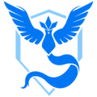
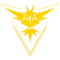
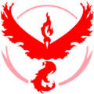
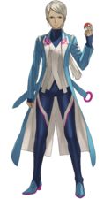
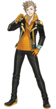
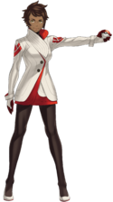
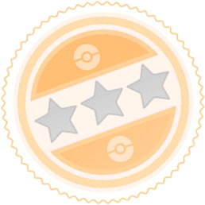
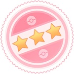

Pokemon Go
Guía básica
Mecánica
La aplicación usa la realidad aumentada(opcional) y la geolocalización, la realidad aumentada que hace uso de la cámara del dispoistivo se puede descativar aunque la geolocalización es obligatoria y tiene que tener la ubicación del dispositivo activada para poder capturar pókemon y otras funcionalidades del juego
En el juego la principal actividad es capturar pókemon mientras el jugador se mueve por el mundo real. Para capturar estos hacen falta pokeballs que se consiguen yendo a pokeparadas o gimnasios y dando giros a los fotodiscos o en la tienda. Los Pokémon se pueden usar en gimnasios para defenderlos(si este es tu equipo y no hay mas de 6 pokémon ya), para combatir contra pokemon en otros gimnasios o incursiones, para la liga de combates go y para luchar contra el Team Go Rocket. Todo esto proporciona puntos de experiencia que sirven para subir de nivel y desbloquear equipo más potente y aumentar los PC máximos de los pokemon en tu haber. Se pueden evolucionar y potenciar a los pokemon que tienes para que estos puedan mejorar en combates
Perfil de entrenador
El perfil de entrenador es lo que puedes ver tanto de ti como de tus amigos cuando vas al perfil en el icono del avatar en la parte inferior izquierda de la pantalla
Dentro del perfil se puede encontrar lo siguiente:
Equipos
Al llegar al nivel 5 el jugador tiene que elegir entre los tres equipos del juego para perteneceer a uno de ellos, cuando se elige un equipo no se puede cambiar a no ser que compres un medallon de equipos en la tienda y solo puede comprar uno cada 6 meses. Cada equipo esta representado por una de tres aves legendarios y cada uno de estos tieni un lider que lo representa y acompaña al jugador
| Equipo Sabiduria | Equipo Instinto | Equipo Valor |
|---|---|---|
 |
 |
 |
 Blanche |
 Spark |
 Candela |
Al elegir el equipo cada uno de ellos te pone en lo que se basa tu investigación y tu decides respecto a eso:
- Yo soy Blanche, líder del Equipo Sabiduría. La inteligencia de los Pokémon es verdaderamente grande. Estoy investigando por que evolucionan. ¿Mi equipo? Con nuestro sereno análisis de todas las situaciones, ¡no podemos perder!
- ¡Hola! Me llamo Spark, y soy el líder del Equipo Instinto. Los Pokémon son criaturas con una intuición excepcional. Yo creo que el secreto de su intuición está relacionado con la forma en la que han nacido. ¡Ven y únete a mi equipo! ¡Nunca pierdes cuando sigues tus instintos!
- Yo soy Candela, líder del Equipo Valor. Los Pokémon son más fuertes que los humanos, ¡y mas bondadosos también! Estoy investigando las formas de mejorar el poder natural de los Pokémon para conseguir una fortaleza verdadera. ¡No hay duda de que los Pokémon que nuestro equipo ha entrenado son los mas fuertes en combate! ¿Todo listo?
Experiencia y nivel
La experiencia y el nivel son cosas ligadas a cada jugador y esta se consigue mientras juegas al juego haciendo cualquier cosa ya se capturar pokemon, hacer incursiones, eclosionar huevos, etc... Y esto sirve para conseguir más equipo conforme subes de nivel y también pudiendo subir de PC a todos tus pokémon hasta el limite que se te ponga por el nivel.
Amigos
Es una funcionalidad la cual permite conectarse con otros jugadores, que se pueden registrar con un código de amigo o escaneando un código QR
Existen varias formas de interactuar con amigos, entre las cuales estan:
- Envio de regalos: Los regalos obtenidos en pokeparadas enviados entre amigos pueden incluir objetos de utilidad, polvo estelar o un huevo de 7 km que es la única manera de conseguirlo.
- En gimnasios o incursiones: Si se realiza una incursión en conjunto con un amigo, se recibiran Honor Ball extra aparte de hacer daño extra al jefe de incursión dependiendo del nivel de amistad.
- Intercambio de pokémon: Se pueden intercambiar los Pokémon almacenados con un amigo. Es necesario tener nivel de entrenador 10 o más.
- Combates de entrenador: Se pueden realizar combates de tres vs tres Pokémon con un amigo. Se debe estar con la persona con quien se quiera combatir y escanear un código QR para iniciar un combate.
Dependiendo de nivel de amistad se pueden ganar experiencia al subir el nivel de amistad y en las incursiones ataque, honor balls y polvo estelar:
| Nivel de Amistad | Interacciones | Experiencia | Ataque | Honor Ball Extra | Polvo Estelar |
|---|---|---|---|---|---|
| Amigo | 0 | 1.000 PX | +3% | - | - |
| Buena Amistad | 1 | 3.000 PX | +5% | - | - |
| Gran Amistad | 7 | 10.000 PX | +7% | 1 | +20% |
| Ultraamistad | 30 | 50.000 PX | +10% | 2 | +92% |
| Amistad Sin Igual | 180 | 100.000 PX | +12% | 4 | +96% |
Compañero Pokémon
Esta función cuenta los kilometros que hace el jugador con su compañero y va dando caramelos cada x kilometros dependiendo del pokémon que sea y dependiendo de este puede aparecer caminando, volando o en tu hombro.
El menu de compañero esta en la parte inferior izquierda al lado del perfil de entrenador, en este se ve la amistad del pokémon contigo y los corazones que conseguiste ese día que se podran conseguir haciendo ciertas tareas diarias.
Las mejoras por nivel de amistad de los pokemon son:
| Nivel | Corazones acumulados | Ventajas |
|---|---|---|
| Nivel 0 | 0 | |
| Nivel 1(Buen compañero) | 1 |
|
| Nivel 2 (Gran compañero) | 70 |
|
| Nivel 3 (Excelente Compañero) | 150 |
|
| Nivel 4 (Mejor Compañero) | 300 |
|
Insignias y medallas de gimnasio
Las insignias son como logros que vas completando a lo largo del juego, algunos dan nuevas vestimentas para el jugador y otras, sobretodo las capturar x pokemon de tipo elemental dan bonos que aumentan la probabilidad de captura siendo de +1 para bronce, +2 para plata, +3 para oro y +4 para platino.
En cuanto a las medallas de gimnasio, cada gimnasio con el que se interactua da una medalla, estas van de bronce a oro según los puntos conseguidos en dichos gimnasios y aumenta la cantidad de objetos que recibes de sus fotodiscos.
Almacenamiento
Hay dos, las bolsa de objetos y el pc de pokémon, ambos comienzan con 350 cada uno pero estos se pueden ir aumentando comprando espacios en la tienda o se te aumenta despues de subir a cierto nivel.
Pokémon
Uno de las objetivos principales en cada juego de pokémon es completar la pokedex. Actualmente en el juego estan los pokémon desde la primera hasta la novena generación con unos pocos que no estan liberadoos y se pueden conseguir capturandolos por el mundo, investigaciones de campo, incursiones, combates Max o eclosionando huevos.
Captura de Pokémon
Los Pokémon salvajes aparecen con mayor frecuencia en zonas con gran concurrencia, tales como parques o centros comerciales
Los Pokémon aparecen en el mapa y, excepto por incienso y modulo de cebo, aparecerán normalmente a todos los jugadores que se encuentran cerca y aparte de esto los PC dependeran del nivel del jugador, aunque a partir de nivel 30 los PC son iguales entre jugadores
A la hora de atrapar un Pokémon habrá que tener en cuenta varios aspectos:
Color del aro de precisión
Esto es posiblemente lo que mejor se entiende a simple vista, cuando mas oscuro sea el aro de precisión más bajo sera el ratio de captura.
Tamaño del aro
Aquí es donde interviene la habilidad del jugador. Cuando mas pequeño sea y si el jugador consigue lanzar la pelota para que este dentro del aro más probabilidad de capturarlo.
Bola Curva
Se puede conseguir si se curva el dedo durante el lanzamiento. Con esto se aumenta la probabilidad de captura. Ademas de obtener 10PX extra.
Cerca
La funcionalidad Cerca indica que Pokémon salvajes se encuentran en la zona. En la esquina inferior derecha de la pantalla se muestran todos los Pokémon cerca.
Cuando se despliega el recuadro completo de la función se pueden ver los Pokémon junto con una fotografía de la pokeparada más cercana a su localización.
Incubación de huevos
Los huevos Pokémon se obtienen aleatoriamente en Poképaradas, estos de 2, 5 y 10 kms. Los otros se consiguen por regalo de amigos, de 7 kms y otro de 12 kms que se consigue al derrotar a un comandante del Team Go Rocket.
Evolución
Para evolucionar a un Pokémon se le deben dar un cantoidad de caramenlos que se especifica cuando vas a los detalles del mismo así como aparecerte si este tiene que hacer algo con el jugador para poder evolucionar(conseguir x corazones con el jugador, ganar x incursiones con el jugador, etc...).
Pokémon Regionales
Esto e¡se explica de manera sencilla, hay ciertos Pokémon en el juego que solo aparecen en ciertas partes del mundo, es decir, Pokémon que solo aparecen en Sudamerica o Europa a no ser que haya un evento que haga que esten disponibles por un pequeño periodo de tiempo en todos los lugares.
Pokémon Variocolor
Los pokémon variocolor se introdujeron por primera vez en 2017 y estos y aquí no es como en los otros juegos donde prácticamente toda la pokedex shiny esta liberada, aquí los van soltando poco a poco por medio de evnetos o investigaciones de campo.
Lugares de interacción
En Pokémon go hay ciertos lugares de interacción donde puedes conseguir diversas cosas de utilidad, en este caso los lugares son:
Poképaradas
Las Poképaras son los lugares básicos para conseguir recursos, ya sean pokeballs, pociones, huevos, etc, o también lugares de cercania de otros Pokémon según el indicador de cercania que hemos visto en el apartado pasado.
Aquí de vez en cuando también habran ciertos eventos como Team Go Rocket o un Kecleon que estara inpidiendo que giremos el fotodisco, para el kecleon simplemente tenemos que darle clic y luego de eso aparecera en el mapa para capturarlo, sin embargo para el Team Go Rocket lo que hay que hacer es vencer al recluta o comandante y se te compensara con un Pokémon Oscuro.
Gimnasios
Los gimnasios se podría decir que son los puntos de reunión de los jugadores de Pokémon Go, es así por una varias razones:
Ocupación de Gimnasios: Los gimnasios pueden pertenecer a un equipo y de ese equipo 6 personas pueden sus Pokémon ahí para exibir los mismos y aparte de eso conseguir Monedas de la tienda con un limite de 50 por día para lo cual el Pokémon tiene que estar 8 horas y 20 minutos en el gimnasio. Los gimnasios se pueden tomar por otro equipo venciendo a los Pokémon que ya hay en el gimnasio y poniendolo de tu equipo y otros jugadores pueden poner los suyos después de eso.
Incursiones: Las incursiones son la principal razón de ir a gimnasios, más que la batalla de equipos, esto es debido a que en las incursiones se pueden conseguir Pokémon que no se pueden conseguir de otra manera e incluso Pokémon legendarios. Las incursiones duran 45 minutos y antes de que estas empiezen en el gimnasio aparece un huevo que indica la hora a la que empieza y la dificultad de la misma siendo la mínima de 1 estrella y la máxima de 6 estrellas y durante el tiempo que dura la incursión no se puede luchar contra los Pokémon del gimnasio.
Recogida de objetos: Al igual que en las Poképaradas en los gimnasios se pueden conseguir objetos de fotodiscos con un plus ya que una vez por día te daran un pase de incursión para hacer las incursiones de las que hablamos arriba.
Nidos Dinamax
Los nidos Dinamax son lugares donde puedes conseguir Pokémon que pueden dinamaxizar o gigamaxizar si ese pokémon es especial, tal como en las incursiones estos dividen la dificultad por estrellas y se pueden hacer con otras personas para que sea más facil
Funcionalidades Extra
Sistema de referidos
En 2021 se agregó la opción de invitar a otras personas que son nuevas o dejaron de jugar a volver al juego y que estos junto con el jugador que los invito tengan una tarea de investigación de las que los dos se beneficien
Juez de IVs
Esto es muy importante sobre todo para jugadores competitivos ya que esto determina hasta que PC máximo puede llegar el Pokémon que tienes y hasta que techo de poder puede llegar, los atributos se dividen en ataque, defensa y PV y todos van del 0 al 15, cuanto más alto mejor y más PC tendra el Pokemón, el juez lo divide en estrellas, siendo 0 estrellas malo y 3 estrellas con rojo de lo mejor.
| Suma de IVs | Porcentaje de IV | Estrellas |
|---|---|---|
| 0 a 22 | 0% a 50% |  |
| 23 a 29 | 51% a 65% | |
| 30 a 36 | 66% a 80% | |
| 37 a 44 | 81% a 99% | |
| 45 | 100% |  |
Intercambio Pokémon
Los intercambios Pokémon se pueden realizar entre amigos y pide una cantidad especifica de polvos esteares dependiendo del Pokémon intercambiado. Los IVs y PC de los Pokémon cambian al ser intercambiados y mediante estos intercambios se pueden obetener Pokémon con Suerte los cuales suben mucho más facilmente de PC al ser alimentados con caramelos y polvo estelar.
Eventos
Cada mes en Pokémon go se hacen ciertos eventos que aumentan la probabilidad de que aparezcan ciertos Pokémon de manera salvaje o por el contrario que estos aparezcan en incursiones, aquí les voy a poner una lista de los eventos:
Comunity Day: Estos son los eventos más importantes de Pokémon Go y cuando hay más jugadores áctivos, en estos eventos aparecen una gran cantidad de Pokémon de una sola especie con una gran probabilidad de que estos sean variocolor, además el Pokémon que aparecera sera bastante raro lo cual hace que durante las 3 horas que dura el evento muchas personas aprovechen hasta el último momento para ver si pueden conseguir más de esta especie.
Hora del Pokémon destacado: Esto es algo similar al Comunity Day pero sin el aumento de probabilidad de shiny y el Pokémon no tiene porque ser tan raro y siempre se hacen durante una hora a la semana los martes.
Hora de incursiones legendarias: En este evento todos los gimnasios estan con una incursión legendaria para que puedas hacer todas las incursiones que puedas con tus amigos si es que quieres esre Pokémon en especifico porque quieras su shiny, uno con mejores IVs o simplemente no lo tengas, estos eventos siempre duran 1 hora los miercoles.
Eventos especializados en un tipo de Pokémon: Estos son los eventos más abundantes y de más duración, en estos eventos aparecen una gran cantidad de especies de un tipo en especifico y suelen durar 1 semana, en estos eventos puedes aprovechar para ver si hay algún Pokémon de algún tipo que no tengas y aprovechar su ratio elevado de aparición y de paso ver si te sale un variocolor de algún Pokémon por suerte.
Pokémon Go Plus
El Pokémon Go Plus es una medallita con un botón que te permite hacer acciones en el juego mientras no estas jugando por medio de Bluetooth.
Si hay un Pokémon cerca te pueden aparecer una luz verde si ese Pokémon ya esta registrado o una amarilla si no esta registrado, si presionas el botón se lanzara un pokeball por ti y si se atrapa aparecera la luz de nuevo y vibrara, si no se atrapa aparecera una luz roja.
Si tienes una pokeparada cerca, la luz sera azul y tendras que pulsar el botón parza recoger los materiales.
Compatibilidades
Pokémon Let's Go
Pokémon Go es compatible con ambos Pokémon Let's Go Pikachu y Pokémon Let's Go Eevee permitiendo transferir Pokémon a través del Go Park siendo esta la única forma de transferir Pokémon a Pokémon Let's Go.
Aparte de esto, cada vez que transfieres un Pokémon consigues una Caja Misteriosa en Pokémon GO que funciona como un incienso de Meltan y la única manera de conseguirlos es mediante esta caja misteriosa.
Salud y Google Fit
En Pokémon Go hay una función de sincroaventura qué permite registrar los pasos sin tener la aplicación en primer plano y además esta se puede vincular a aplicaciones de salud de dispositivos Apple o Google Fit en caso de Android.
Pokémon HOME
Para realizar el envió se realiza mediante una opción para transferir Pokémon a Pokémon HOME y se necesita Energía Transladador GO con cada Pokémon que es enviado y dependiendo del Pokémon tranferido gastara más o menos energía, esta energía se recarga sola con el tiempo y sobre todo si quieres pasar singulares o legendarios tendras que esperar un tiempo para poder hacerlo.